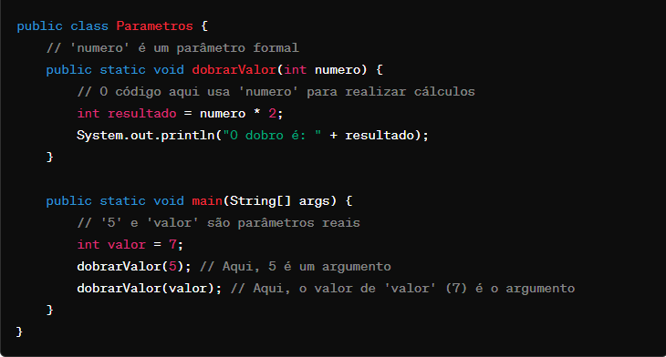

Resumo para a segunda prova de Linguagens de Programação - Abstração.
Abstração
Abstração é o processo de identificar as qualidades ou propriedades importantes do fenõmeno que está sendo modelado
Na programação: faz referência à distinção entre O QUE uma parte do programa faz e COMO ela é implementada
Exemplo: as construções de uma LP são abstrações do código de máquina.
Importante para a construção de códigos grandes -> pode existir vários níveis de abstração, através da implementação de procedimentos.
Tipos de abstrações
Abstração é uma entidade que incorpora uma computação
Abstração de função:
Incorpora uma expressão a ser avaliada e, quando chamada, produz um valor como resultado
Visão do usuário: Chamada de função -> mapear os argumentos a um resultado
Visão do programador: Chamada de função -> avaliar o corpo da função, tendo os parâmetros formais amarrados aos argumentos correspondentes
Abstração de procedimento:
Incorpora um comando a ser executado e, quando chamado, irá atualizar o valor de variáveis
Visão do usuário: Chamada de procedimento -> atualizar variáveis, de uma maneira que será influenciada por seus argumentos
Visão do programador: Chama de procedimento -> executar o corpo do procedimento, tendo os parâmetros formais amarrados aos argumentos correspondentes
Princípio da Abstração
Possível criar abstrações para qualquer tipo de estrutura de código, desde que essa estrutura realize algum tipo de processamento ou cálculo.
Ajuda a identificar formas de tornar a linguagem mais expressiva e mais regular
Parâmetros
Parâmetro formal: identificador utilizado dentro de uma função para denotar um argumento
Parâmetro real: uma expressão que produz argumento
Argumento: um valor que pode ser passado para uma abstração -> específico de cada LP

Mecanismo de passagem de parâmetro: método de associação entre parãmetros formais e reais
Mecanismos de cópia
Permite que valores sejam copiados para dentro ou para fora de uma abstração
Parâmetros formais denotam variáveis locais
Passagem de valor: ENTRADA -> varíavel X é criada e recebe como valor inicial o valor do argumento
Passagem de resultado: Argumento deverá ser uma variável. ENTRADA -> variável X é criada, sem valor inicial; SAIDA -> valor final de X é atribuido ao argumento
Passagem de valor resultado: Combinação dos dois acima
Mecanismos de definição
Permite que um parâmetro formal X seja amarrado diretamente ao argumento
Parâmetro constante: argumento é um valor; X é amarrado ao valor do argumento durante a ativação da abstração
Parâmetro variável: argumento é uma referência a uma varíavel; qualquer utilização de X é uma utilização indireta ao argumento
Parâmetro procedimental: argumento é uma abstração de procedimento; qualuqer chamada a X é, na verdade, uma chamada indireta do argumento(procedimento)
Parâmetro funcional: argumento é uma abstração de função; qualquer chamada a X é, na verdade, uma chamada indireta ao argumento(função)
Mecanismos de definição X Mecanismos de cópia
MD -> semantica mais simples; mais eficiente;
Princípio da Correspondência
Possível correspondência entre alguns mecanismos de passagem de parâmetro e alguns tipos de declarações
Declaração -> especifica o identificador e a entidade a qual será amarrada
Especificação de parâmetro formal especifica somente identificador e o argumento vem de alguma outra parte do programa
Ordem de avaliação
Quando uma abstração é chamada, em que momento cada parâmetro é avaliado?
Avaliação prévia -> no ponto da chamada; apenas uma vez e o seu valor substitui cada ocorrência do parâmetro formal
Avaliação de ordem normal -> no momento em que o argumento for realmente utilizado; parâmetro formal é substituído pelo real
Função strict: chamada à função só pode ser avaliada se todos os seus argumentos puderem ser avaliados
Função nonstrict: chamada à função puder ser avaliada, mesmo que n-ésimo argumento não possa ser avaliado